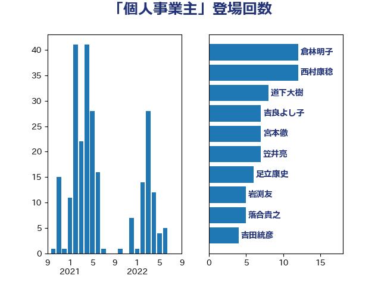

単語「個人事業主」

| 倉林明子 | 日本共産党 | 12 回 |
| 西村康稔 | 自由民主党 | 12 回 |
| 道下大樹 | 立憲民主党 | 8 回 |
| 吉良よし子 | 日本共産党 | 7 回 |
| 宮本徹 | 日本共産党 | 7 回 |
| 笠井亮 | 日本共産党 | 7 回 |
| 足立康史 | 日本維新の会 | 6 回 |
| 岩渕友 | 日本共産党 | 5 回 |
| 落合貴之 | 立憲民主党 | 5 回 |
| 吉田統彦 | 立憲民主党 | 4 回 |
| 田村憲久 | 自由民主党 | 4 回 |
| ながえ孝子 | 無所属 | 3 回 |
| 佐藤英道 | 公明党 | 3 回 |
| 石垣のりこ | 立憲民主党 | 3 回 |
| 藤田文武 | 日本維新の会 | 3 回 |
| たがや亮 | れいわ新選組 | 2 回 |
| 大西健介 | 立憲民主党 | 2 回 |
| 小林鷹之 | 自由民主党 | 2 回 |
| 山岡達丸 | 立憲民主党 | 2 回 |
| 山添拓 | 日本共産党 | 2 回 |
| 岸田文雄 | 自由民主党 | 2 回 |
| 川田龍平 | 立憲民主党 | 2 回 |
| 平井卓也 | 自由民主党 | 2 回 |
| 杉久武 | 公明党 | 2 回 |
| 梶山弘志 | 自由民主党 | 2 回 |
| 沢田良 | 日本維新の会 | 2 回 |
| 浅野哲 | 国民民主党 | 2 回 |
| 玉木雄一郎 | 国民民主党 | 2 回 |
| 田村貴昭 | 日本共産党 | 2 回 |
| 萩生田光一 | 自由民主党 | 2 回 |
| 青柳陽一郎 | 立憲民主党 | 2 回 |
| 麻生太郎 | 自由民主党 | 2 回 |
| 三原じゅん子 | 自由民主党 | 1 回 |
| 中野洋昌 | 公明党 | 1 回 |
| 串田誠一 | 日本維新の会 | 1 回 |
| 仁木博文 | 無所属 | 1 回 |
| 加田裕之 | 自由民主党 | 1 回 |
| 勝部賢志 | 立憲民主党 | 1 回 |
| 吉川赳 | 無所属 | 1 回 |
| 塩川鉄也 | 日本共産党 | 1 回 |
| 小池晃 | 日本共産党 | 1 回 |
| 小沼巧 | 立憲民主党 | 1 回 |
| 山井和則 | 立憲民主党 | 1 回 |
| 山崎誠 | 立憲民主党 | 1 回 |
| 山本香苗 | 公明党 | 1 回 |
| 山田美樹 | 自由民主党 | 1 回 |
| 山田賢司 | 自由民主党 | 1 回 |
| 岡本三成 | 公明党 | 1 回 |
| 岸真紀子 | 立憲民主党 | 1 回 |
| 川合孝典 | 国民民主党 | 1 回 |
| 平木大作 | 公明党 | 1 回 |
| 後藤祐一 | 立憲民主党 | 1 回 |
| 早坂敦 | 日本維新の会 | 1 回 |
| 末松義規 | 立憲民主党 | 1 回 |
| 枝野幸男 | 立憲民主党 | 1 回 |
| 森本真治 | 立憲民主党 | 1 回 |
| 橋本岳 | 自由民主党 | 1 回 |
| 江田憲司 | 立憲民主党 | 1 回 |
| 池下卓 | 日本維新の会 | 1 回 |
| 河西宏一 | 公明党 | 1 回 |
| 浜田聡 | NHK党 | 1 回 |
| 清水貴之 | 日本維新の会 | 1 回 |
| 田中健 | 国民民主党 | 1 回 |
| 田名部匡代 | 立憲民主党 | 1 回 |
| 田嶋要 | 立憲民主党 | 1 回 |
| 田村まみ | 国民民主党 | 1 回 |
| 田畑裕明 | 自由民主党 | 1 回 |
| 石橋通宏 | 立憲民主党 | 1 回 |
| 福島みずほ | 社会民主党 | 1 回 |
| 稲津久 | 公明党 | 1 回 |
| 舩後靖彦 | れいわ新選組 | 1 回 |
| 芳賀道也 | 国民民主党 | 1 回 |
| 菅義偉 | 自由民主党 | 1 回 |
| 蓮舫 | 立憲民主党 | 1 回 |
| 藤巻健太 | 日本維新の会 | 1 回 |
| 西岡秀子 | 国民民主党 | 1 回 |
| 西村智奈美 | 立憲民主党 | 1 回 |
| 角田秀穂 | 公明党 | 1 回 |
| 鈴木俊一 | 自由民主党 | 1 回 |
| 長友慎治 | 国民民主党 | 1 回 |
| 青柳仁士 | 日本維新の会 | 1 回 |
| 高橋はるみ | 自由民主党 | 1 回 |
| 高橋光男 | 公明党 | 1 回 |